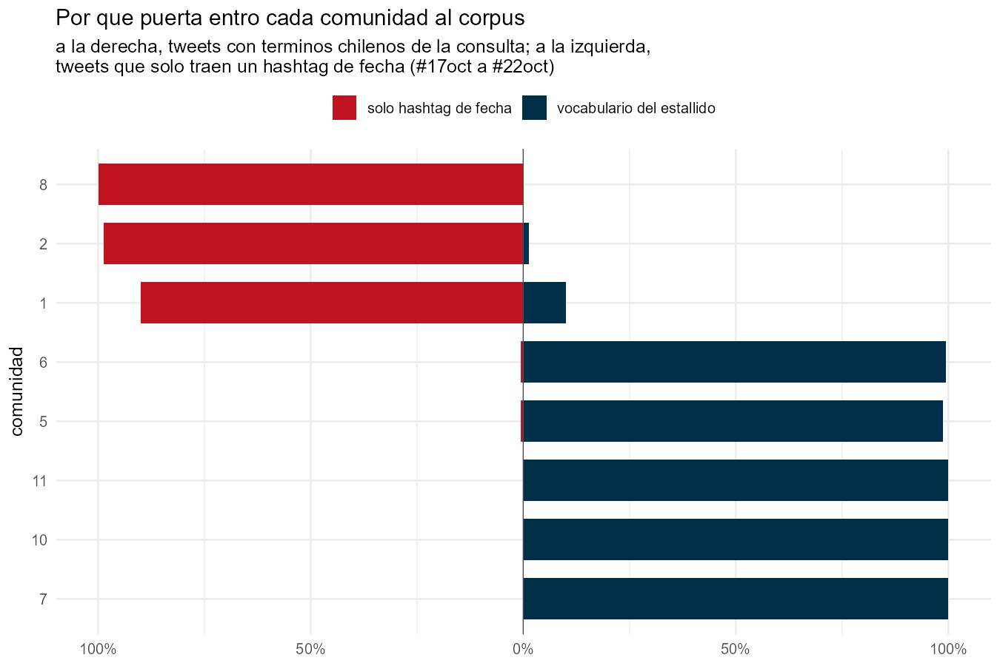
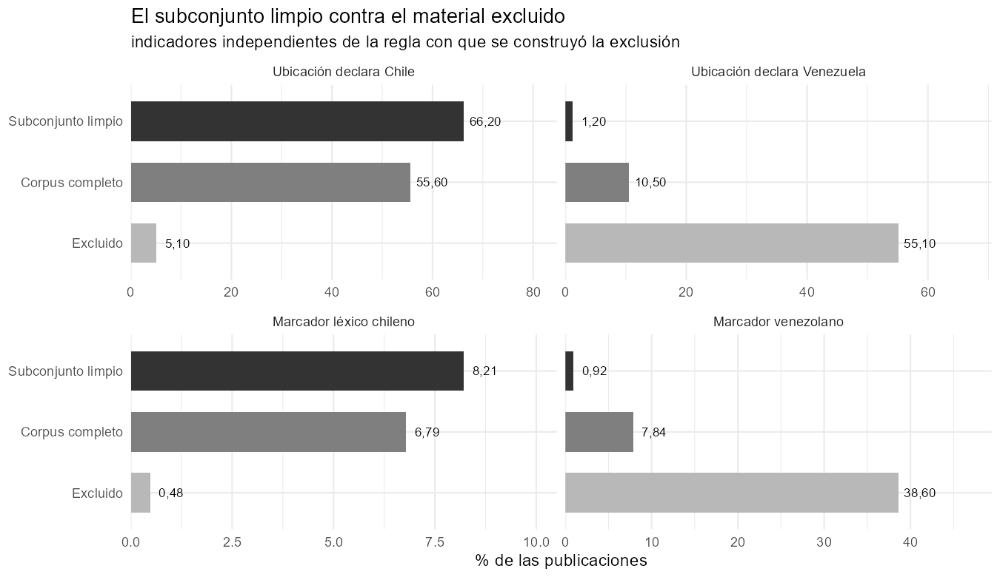

Qué entró al corpus por la puerta equivocada, y cómo medirlo
Seis de las 49 consultas con que se armó el corpus son hashtags de fecha: #17oct, #18Oct, #19Oct, #20Oct, #21Oct, #22Oct. Explican 941.446 tweets, el 15,4% del total. Y son términos que cualquiera en el mundo usa ese día, hable de lo que hable.
La pregunta es cuánto de este corpus de protesta chilena no habla de protesta chilena.
Un índice de contagio
Para cada comunidad se mide qué fracción de sus tweets trae hashtag de fecha pero ningún término chileno de la consulta. Si una comunidad entró por el vocabulario del estallido, esa fracción es cercana a cero. Si entró por la puerta genérica, es cercana a uno.
ver código
tabla(cg[order(-pct_solo_fecha), .(Comunidad = comunidad, Tweets = tweets,`% con hashtag de fecha`= pct_con_fecha,`% con término chileno`= pct_con_chile,`% SOLO fecha`= pct_solo_fecha)], align ="rrrrr")
Warning in prettyNum(.Internal(format(x, trim, digits, nsmall, width, 3L, :
'big.mark' y 'decimal.mark' son ambos '.', lo cual puede ser confuso
Warning in prettyNum(.Internal(format(x, trim, digits, nsmall, width, 3L, :
'big.mark' y 'decimal.mark' son ambos '.', lo cual puede ser confuso
Warning in prettyNum(.Internal(format(x, trim, digits, nsmall, width, 3L, :
'big.mark' y 'decimal.mark' son ambos '.', lo cual puede ser confuso
Warning in prettyNum(.Internal(format(x, trim, digits, nsmall, width, 3L, :
'big.mark' y 'decimal.mark' son ambos '.', lo cual puede ser confuso
Warning in prettyNum(.Internal(format(x, trim, digits, nsmall, width, 3L, :
'big.mark' y 'decimal.mark' son ambos '.', lo cual puede ser confuso
Tabla 1: Índice de contagio por comunidad, 18 de octubre.
Comunidad
Tweets
% con hashtag de fecha
% con término chileno
% SOLO fecha
8
3.901
100.0
0.0
100.0
2
41.264
99.6
1.3
98.7
1
60.107
92.2
10.1
89.9
6
11.610
0.6
99.4
0.6
5
14.898
0.7
98.8
0.5
11
19.983
0.4
99.9
0.1
10
186.425
3.6
99.9
0.0
7
157.772
0.1
100.0
0.0

La separación es total. No hay zona gris:
Comunidad 8 — Guardia Nacional Bolivariana de Venezuela. Cero tweets con vocabulario chileno. El 100% entró por hashtag de fecha.
Comunidad 2 — medios venezolanos opositores. 98,7%.
Comunidad 1 — medios estatales chavistas, incluido teleSUR. 89,9%.
Comunidades chilenas — entre 0,0% y 0,6%.
Lo que ya se veía en la red
Esas tres comunidades eran justamente las que aparecían aisladas en la matriz de diálogo: 97%, 97% y 91% de retweets internos. Lo que ahí se leía como aislamiento estructural, acá tiene una causa concreta: no estaban en la misma conversación porque nunca entraron a ella.
Sus hashtags lo confirman. La comunidad 1 empuja #VenezuelaEsDDHH con 24.047 menciones y tweets que dicen literalmente “¡LA ETIQUETA DEL DÍA!”. La comunidad 2 habla de presos políticos venezolanos y de lluvias en Caracas.
En total son 10.828 cuentas y 74.130 retweets que conviene excluir antes de cualquier análisis sustantivo del estallido.
Presencia no es influencia
El bloque suma el 19,1% de los nodos de la red y el 18,9% del volumen de retweets. Pero su penetración en la conversación chilena es:
Retweets del bloque que llegan a cuentas chilenas
1,99%
Retweets chilenos que amplifican cuentas del bloque
0,42%
Presencia del 19%, influencia del 0,4%. Es un circuito paralelo que habla solo.
El subconjunto limpio
El corpus no se entrega solo con la advertencia: se entrega con el corte hecho y validado, para que quien investigue el estallido no tenga que decidir el criterio ni replicarlo.
La exclusión opera en dos reglas, guardadas por separado para poder aplicarse sueltas:
Tabla 2: Indicadores que NO intervienen en la regla de exclusión, para que el contraste no sea circular.
conjunto
Corpus completo
Subconjunto limpio
Excluido
País = Chile (geo.)
85.0
90.6
17.1
Ubic. declara Chile
55.6
66.2
5.1
Ubic. declara Venezuela
10.5
1.2
55.1
Marcador chileno
6.79
8.21
0.48
Marcador venezolano
7.84
0.92
38.60

El material excluido es 55,1% venezolano por ubicación declarada y 38,6% por léxico, contra 1,2% y 0,9% en el subconjunto. La separación opera en los dos sentidos: lo retirado es mayoritariamente ajeno, y lo retenido es más chileno que el corpus de partida.
Una sobre-exclusión que hay que declarar
La regla (b) retira toda la actividad de esas cuentas, incluida la que sí trata de Chile. Entre lo excluido quedan 66.680 usos de #toquedequeda y 50.569 de #ChileDesperto, casi todos de la comunidad 1 — medios estatales venezolanos que cubrieron el episodio, cuyo índice de contaminación es 89,9% y no 100%.
Tratar esa cobertura como ajena a la conversación chilena es una decisión interpretativa, no técnica. Quien sostenga que forma parte del fenómeno aplica únicamente la regla (a), y queda adentro.
Por qué esto es generalizable
El método no depende de este corpus. Cualquier dataset recolectado por hashtags —y los de protesta casi siempre incluyen hashtags de fecha— puede medir qué fracción de sus datos entró por términos ambiguos. Hasta donde sabemos, ningún corpus público de Twitter publica ese diagnóstico.